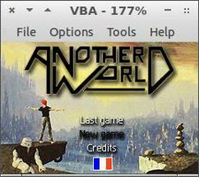

VisualBoyAdvance
Dieser Artikel wurde für die folgenden Ubuntu-Versionen getestet:
Ubuntu 14.04 Trusty Tahr
Zum Verständnis dieses Artikels sind folgende Seiten hilfreich:
Visual Boy Advance  ist ein Emulator. Dieser gestattet es, Spiele für Nintendo® GameBoy™, GameBoy™ Color und GameBoy™ Advance unter Linux zu spielen. Hierfür sind Spielemodule nötig, welche in den Formaten .gb, .gbc oder .gba vorliegen müssen. Die Spiele können mit Tastatur und/oder Joystick gespielt werden.
ist ein Emulator. Dieser gestattet es, Spiele für Nintendo® GameBoy™, GameBoy™ Color und GameBoy™ Advance unter Linux zu spielen. Hierfür sind Spielemodule nötig, welche in den Formaten .gb, .gbc oder .gba vorliegen müssen. Die Spiele können mit Tastatur und/oder Joystick gespielt werden.
Außerdem unterstützt VisualBoyAdvance folgende Funktionen:
Bildschirmfotos
Vollbild
diverse Grafik-Filter
Spielstand speichern/laden etc.
|  |
| VBA (GTK) |
| Spielszene |
| VBA Express |
Installation¶
Folgendes Paket muss installiert [1] werden:
visualboyadvance (universe)
 mit apturl
mit apturl
Paketliste zum Kopieren:
sudo apt-get install visualboyadvance
sudo aptitude install visualboyadvance
Optional kann man für die jeweilige grafische Oberfläche ein passendes GUI-Frontend verwenden:
visualboyadvance-gtk (universe, GTK-Version für GNOME, LXDE und Xfce)
mit apturl
Paketliste zum Kopieren:
sudo apt-get install visualboyadvance-gtk
sudo aptitude install visualboyadvance-gtk
oder
vbaexpress (universe, KDE)
mit apturl
Paketliste zum Kopieren:
sudo apt-get install vbaexpress
sudo aptitude install vbaexpress
GTK-Version¶
Die GTK-Version kann mit dem Befehl gvba gestartet [2] werden.
Folgende Reiter stehen dem Nutzer zur Verfügung:
| GVBA | |
| Menüpunkt | Beschreibung |
| File | Öffnen, Laden und Speichern von ROMS / Pause / Reset |
| Options | Einstellungen zu Grafik, Sound, Darstellungsgröße, Joypad etc. vornehmen. |
| Tools | GBA-Spiele über das Internet gegeneinander spielen. |
VBA Express¶
Nach der Installation findet sich unter KDE4 ein Eintrag im K-Menü unter "Spiele -> VBA Express". Alternativ lässt sich das Programm auch mit dem Befehl vbaexpress über ein Terminal [2] starten.
VBA Express ist derzeit mit englischer und französischer Sprache benutzbar. Über das Menü kann man Einstellungen zu Grafik und Audio vornehmen und eine ROM-Datei laden. Außerdem lassen sich die Funktionstasten festlegen. Hierzu wählt man zunächst die Funktion der Taste aus, indem man auf die entsprechende Schaltfläche klickt, und wird dann aufgefordert, die entsprechende Taste zu drücken, um diese der Funktion zuzuweisen.
Terminal¶
Um VisualBoyAdvance über ein Terminal [2] zu öffnen, gibt man folgenden Befehl an:
VisualBoyAdvance --throttle=100 --filter-super-eagle ROMNAME.gba
ROMNAME steht hier für das zu ladende Spiel. Möglicherweise muss vor dem Namen des ROMs noch der Pfad zu diesem angegeben werden. Eine detaillierte Auflistung der Startoptionen findet man in den Manpages.
Alternativ kann man den Emulator auch über den kürzeren Befehl starten:
vba --throttle=100 --filter-super-eagle ROMNAME.gba
Benutzung¶
Die Steuerung innerhalb eines Spieles - egal, auf welche Weise es gestartet wird - geschieht mit folgenden Tasten:
| Tastenkürzel | |
| Taste | Tastenentsprechung auf dem GameBoy |
| ← ↑ → ↓ | Steuerungkreuz |
| Z | A |
| X | B |
| A | L |
| S | R |
| ⌫ | Select |
| ⏎ | Start |
Weitere Tastenkürzel funktionieren standardmäßig nicht mit gvba, allerdings mit vba und vbaexpress:
| Tastenkürzel | |
| Taste | Beschreibung |
| Beschleunigung | |
| F1 ... F10 | Spielstände laden |
| ⇧ + F1 - ⇧ + F10 | Spielstände sichern |
| Alt + 1 - Alt + 4 | Autofeuer für A,B,L und R |
| Strg + R | Reset |
| Strg + P | Pause |
| F12 | Bildschirmfoto machen (standardmäßig im PNG-Format, in gvba und vbaexpress lässt sich noch bmp einschalten) welche in ~/.vba/ gespeichert werden |
| C | Cheat-Modus |
Die Tasten können neu definiert werden. Manche grafischen Oberflächen machen dies bereits automatisch. Will man sie selbst neu definieren (und das ist im Fall der A-Taste sinnvoll, da sie bei deutschen Tastaturlayouts auf Z statt auf Y liegt), muss man entweder die mit Kommentaren versehene Datei ~/VisualBoyAdvance.cfg mit einem Editor [3] anpassen, oder man verändert sie mit VBA Express bzw. der GTK-Version, je nachdem, was verwendet wird. Dies gilt ebenfalls für die Konfiguration des Joysticks. Die Datei könnte aussehen wie in diesem Beispiel: VisualBoyAdvance.cfg 
Problembehebung¶
Emulator hängt sich beim Beenden auf¶
Es kommt vor, dass sich der Emulator beim Beenden aufhängt . Dann hilft nichts anderes mehr, als den Prozess mit kill zu beenden.
Emulator läuft zu schnell¶
Es kann passieren, dass der Emulator zu schnell läuft. Die Geschwindigkeit wird standardmäßig immer im Fensterrahmen als Prozentzahl dargestellt, wobei 100% der normalen Geschwindigkeit entspricht. Sollte der Wert über 100% steigen, hat man drei Möglichkeiten das Problem zu lösen:
Throttle¶
Dazu ändert man entweder in der GUI oder als Kommandozeilenparameter den Wert throttle. Im Terminal geht das so:
VisualBoyAdvance --throttle=100 *.gba # Hier wurde der Wert 100 genutzt.
Mögliche Werte sind den Manpages zu entnehmen.
Soundeinstellungen¶
Wenn die Geschwindigkeit über 200% steigt muss man, so seltsam es klingen mag, die Soundqualität auf die höchste Stufe stellen. Am einfachsten geht das, wenn man mit einem Editor [3] die Datei ~/VisualBoyAdvance.cfg öffnet und dort die Zeile soundQuality auf 1 stellt:
soundQuality=1
Danach sollte sich die Geschwindigkeit immer bei um die 100% einpendeln.
Grafikfilter¶
Außerdem kann es unter Umständen helfen unterschiedliche Grafikfilter auszuprobieren, da auch diese die Geschwindigkeit beeinflussen.
Experten-Info:
Das liegt daran, dass die Gameboy-Spiele keine eingebaute Geschwindigkeitsbegrenzung haben sondern nur durch die Geschwindigkeit der CPU in der Hardware beschränkt werden. Bei Computern ist diese natürlich um ein Vielfaches größer als bei einem Gameboy. So muss der Computer mit teils unnötigen Funktionen verlangsamt werden.
Links¶
Visual Boy Advance
- Forum zum Programm auf NGEmu.comAmateurentwicklungen
- ROMs für den GameBoy

- Erstellt mit Inyoka
-
 2004 – 2017 ubuntuusers.de • Einige Rechte vorbehalten
2004 – 2017 ubuntuusers.de • Einige Rechte vorbehalten
Lizenz • Kontakt • Datenschutz • Impressum • Serverstatus -
Serverhousing gespendet von